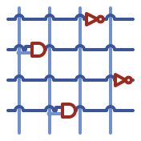

Jacquard Documentation
Welcome to the documentation for Jacquard, a GPU-accelerated RTL logic simulator.
Use the sidebar to navigate between topics, or start with the Getting Started guide — it runs four bundled designs in a few seconds with no synthesis. To prepare and run your own RTL, see the Synthesis Flow; for UVM/cocotb/SVA questions, Testbench Interop.
Documents
Project Scope & Planning
Start here if you're considering a feature contribution or want to understand Jacquard's overall direction.
- Project Scope & Guarantees: Top-level contract — what Jacquard is for, what it isn't, licensing and architecture constraints, stability tiers.
- Why Jacquard: Honest positioning vs. STA tools and event-driven simulators; what's unique, what isn't, and what output interface would let users extract the value.
- Timing Correctness: Scoped requirements for timing accuracy, validation, and the forthcoming timing IR.
- Timing Model Extensions: Pre-spike design notes for δ(T) dynamic delay, clock-tree skew, and wire delay at scale. Formalised in ADR 0007.
- Post-Phase-0 Roadmap: Sequencing of Phase 1+ work covering structured timing output (ADR 0008) and timing model fidelity (ADR 0007). (OpenTimer integration was originally Phase 1's centrepiece; ADR 0003 was Superseded by the spike — OpenSTA out of process is now the sole STA path per ADR 0001.)
- Architecture Decision Records: Design decisions and their rationale (numbered, per-decision). See the index for status and how the ADRs relate.
- Implementation Plans: Phased implementation plans with entry and exit criteria. See the index for status and reading order.
- Spikes: Time-boxed experiments and their outcomes.
Core Documentation
-
Simulation Architecture: Detailed explanation of Jacquard's internal architecture
- Pipeline stages (NetlistDB → AIG → StagedAIG → Partitions → FlattenedScript → GPU)
- Data structures and representations
- VCD input/output format requirements
- Assertion and display support infrastructure
- Performance characteristics
- Known issues and limitations
-
Timing Simulation: CPU-based timing simulation with Liberty/SDF delays
-
Timing Violations: GPU-side setup/hold violation detection
Troubleshooting Guides
- Troubleshooting VCD: Debugging VCD input issues
- VCD hierarchy requirements
- Signal naming and matching
- Solutions for flat VCD generation
- Diagnostic checklist
- Working examples
Quick Reference
VCD Input Requirements (Critical!)
Jacquard expects VCD signals at absolute top-level (no module hierarchy):
// ✓ Correct testbench
initial begin
$dumpfile("output.vcd");
$dumpvars(1, clk, reset, din, dout); // Depth 1, explicit signals
end
// ✗ Incorrect testbench
initial begin
$dumpfile("output.vcd");
$dumpvars(0, testbench); // Dumps entire hierarchy
end
Debug Commands
# Enable debug logging
RUST_LOG=debug cargo run -r --features metal --bin jacquard -- sim <args>
# Verify with CPU simulation
cargo run -r --features metal --bin jacquard -- sim <args> --check-with-cpu
# Check VCD structure
grep '\$scope\|\$var' input.vcd | head -20
Cosim (reactive peripherals)
jacquard cosim runs GPU-resident peripheral models (SPI flash, UART, Wishbone)
alongside the design so inputs can react to outputs cycle-by-cycle. It runs on
Metal, CUDA, and HIP (plus a CPU fallback).
# Drive the design from a JSON testbench config; write an output VCD
cargo run -r --features metal --bin jacquard -- cosim \
design.v --config sim_config.json --output-vcd out.vcd
| Flag | Purpose |
|---|---|
--config <json> | Testbench config: clock(s), reset, peripherals (required) |
--output-vcd <path> | Output VCD (chip outputs + any traced nets) |
--trace-signals <path> | Surface internal nets in the VCD (Signal Tracing) |
--bus-trace-csv <path> | Decode on-chip bus transactions (Bus Tracing) |
--jtag-server <port> / --jtag-replay <path> | Interactive / deterministic JTAG debug (JTAG Debug) |
--xprop | Selective X-propagation for uninitialised state |
--max-clock-edges <n> | Limit simulation length (1 cycle = 2 edges) |
Key Statistics
When running Jacquard, look for these diagnostic outputs:
netlist has X pins, Y aig pins, Z and gates # AIG complexity
current: N endpoints, try M parts # Partition count
Built script for B blocks, reg/io state size S # Final script
WARN (GATESIM_VCDI_MISSING_PI) ... # VCD issues!
Investigation Methodology
This documentation was created through systematic investigation of Jacquard's behavior:
- Source Code Analysis: Examined
src/aig.rs,src/flatten.rs,src/staging.rs - Debug Tracing: Used
RUST_LOG=debugto capture internal state - Test Case Development: Created minimal reproducible examples
- Comparative Testing: Compared Jacquard vs iverilog outputs
- Third-Party Validation: Tested with real-world examples (sva-playground)
Known Issues
Tracked live on GitHub — see the
open issues and the
priority:high
label. The long-standing ones:
- VCD hierarchy mismatch — Jacquard expects a flat top-level VCD; most
testbenches emit hierarchical ones. Workaround:
--input-vcd-scope(see Troubleshooting VCD). Tracking: #142. - Complex FSM simulation — some FSM designs (e.g.
safe.v) don't simulate correctly; under investigation. Tracking: #143. - Format-string preservation — Yosys may drop
gem_formatattributes, so$displaymessages show placeholders. This is an upstream Yosys limitation; the workaround is to extract format strings from the pre-synthesis JSON.
Contributing
When adding documentation:
- Be specific: Include actual commands, file paths, code snippets
- Show examples: Both working and non-working cases
- Link related docs: Cross-reference other documentation files
- Date updates: Update version and date at bottom of documents
- Test instructions: Verify all commands actually work
Future Documentation Needs
Dedicated guides not yet written (coverage today is scattered across ADRs and reference docs):
-
Performance tuning guide (choosing
NUM_BLOCKS,--level-split) - SRAM modeling & synthesis (synthesis flow + preload + observability in one place)
- Multi-clock domain user guide (config examples; cf. #87 for test coverage)
- GPU kernel optimization internals (profiling, backend-specific tuning)
Now covered: custom cell libraries → Adding a New PDK + ADR 0010/0011; VCD scope behaviour → Troubleshooting VCD.
Related Resources
- Main README:
../README.md- Project overview and quick start - CLAUDE.md:
../CLAUDE.md- Development guidelines and architecture overview - Test Suite:
../tests/- Examples and regression tests - Third-Party Tests:
../tests/regression/third_party/- Real-world examples with attribution
Last Updated: 2026-06-26 Maintained By: gpu-eda community